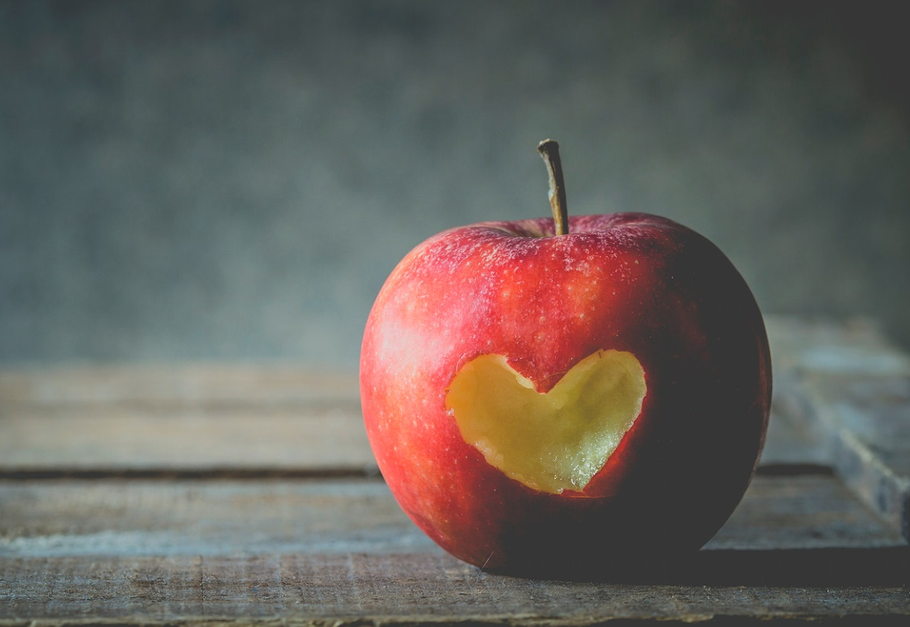

Food Connects Families and Brings Communities Together

Works Cited
The following sources were used in the creation of this website:
- Brones, A. (2018, May 15). Food apartheid: the root of the problem with America's groceries. The
Guardian. Retrieved September 18, 2022, from https://www.theguardian.com/society/2018/may/15/
food-apartheid-food-deserts-racism-inequality-america-karen-washington-interview
- Llopis-Jepsen, C. (2022, March 30). 1 in 6 Kansans lives in a food desert. Some in central Topeka insist they can build an oasis (Kansas City
Public Radio, Ed.). NPR in Kansas City. Retrieved September 18, 2022, from https://www.kmuw.org/community/2022-03-30/1-in-6-kansans-lives-in-a-food-desert-some-in-central-topeka-insist-they-can-build-an-oasis
- Para-Cremer Moore, S., & Lin, T. Y. (2022, March 1). Understanding food security in Shawnee County. Kansas Health Institute. Retrieved
September 18, 2022, from https://www.khi.org/articles/2022-understanding-food-insecurity-in-shawnee-county-2/.